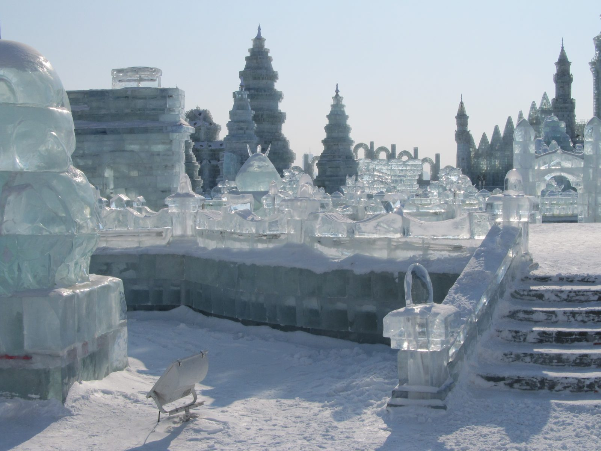

Festivals · Culture
Harbin International Ice and Snow Festival 2027 (43rd)
- Dates
- Venue
- Harbin Ice-Snow World
- Location
- Harbin, China
- Format
- In-person
- Category
- Culture
- Industry
- Culture / winter festival
- Organiser
- Harbin Municipal Government
- Official website
- https://www.hrbicesnow.com/
About
start_date/end_date are the official opening-ceremony day (5 Jan 2027) at Harbin Ice-Snow World. The wider 2026-27 ice-and-snow season runs from early Nov 2026 to Mar 2027, with the Ice-Snow World park opening in mid-Dec 2026. Dates are local to the host city (China Standard Time, UTC+8).
Topics: ice sculpture, snow sculpture, winter festival, Ice-Snow World.
No organiser attendance figure found on the official pages fetched 24 Nov 2026. Ranked by our estimated size tier 'very large' (100,000+ attendees/visits), a judgement from format, venue and scale, not an official number.
Sources
- Official (park operator, Harbin Ice and Snow World) — https://www.hrbicesnow.com/
- Previous listing (Heilongjiang government notice) — https://www.hlj.gov.cn/hlj/c107858/202610/c00_31990058.shtml
- Official — https://www.hlj.gov.cn/hlj/c107858/202611/c00_31993949.shtml